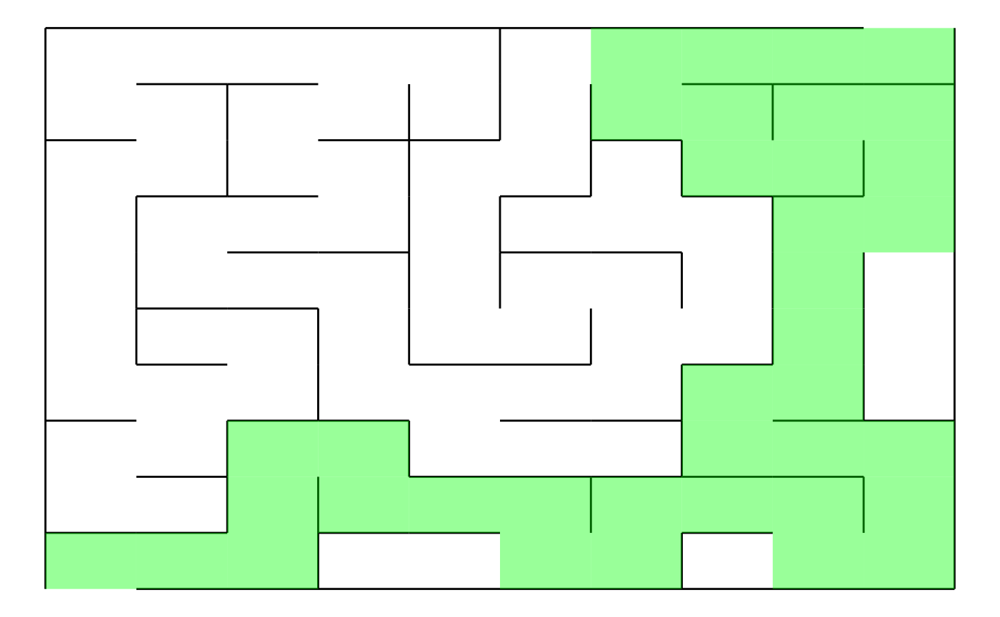

This is the README.md where you can find all the necessary documentation and resources related to package.
Installation
#devtools::install_github("ptds2022/groupf/RetakeExamF") # to edit
library(RetakeExamF) #call the packageDescription
RetakeExamF is a dynamic R package that empowers users to craft captivating mazes using the Depth-First Search (DFS) algorithm. Seamlessly merging educational insights and creative possibilities, this package provides a user-friendly platform to generate mazes of varying complexities.
By integrating the “igraph” package, the creation of networks composed of edges and vertices, improve the flexibility and customization of maze designs. “ggplot2” package further elevates the maze-building experience by enabling users to visualize their mazes with aesthetically pleasing layouts.
Steps to follow to get a maze
1) Make a graph
Define the number of rows and cols to give a dimension to the graph and assign it name.
3) Plot the graph
Plot your name_graph.
You can have a glimpse of the final output that the package offers :
Example_maze <- RetakeExamF::myGraph (nrows = 10,ncols = 10)
Example_maze <- RetakeExamF::dfs_method (GraphMade = Example_maze)
RetakeExamF::plotmyMaze(Example_maze,nrows= 10,ncols = 10)A nice example
It is also possible to display the solution path of the existing maze as below : 
Finally the package is compatible with Shiny.
RetakeExamF::myMazeShinyApp() # shiny app experience Additional resources - (annexe)
You can find more information on DFS algorithm to build a maze here :
https://www.algosome.com/articles/maze-generation-depth-first.html https://www.geeksforgeeks.org/random-acyclic-maze-generator-with-given-entry-and-exit-point/ https://github.com/Vessy/Rmaze/tree/master
Please, to know more about the different functions included in igraph and ggplot2 packages, refer to the resources below :